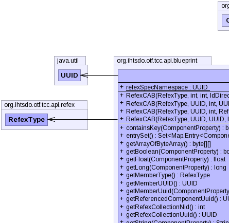
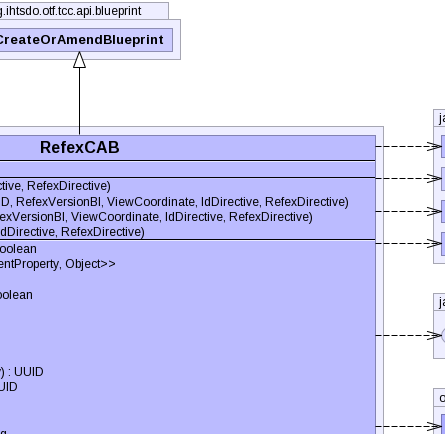
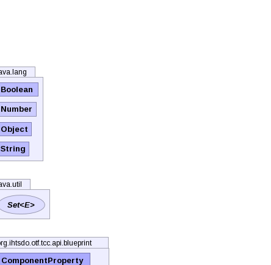
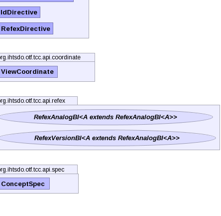

public class RefexCAB extends CreateOrAmendBlueprint
MediaChronicleBI. This is the preferred method for updating or creating new descriptions.TerminologyBuilderBI,
RefexChronicleBI|  |  |  |
|  |
| Modifier and Type | Field and Description |
|---|---|
static UUID |
refexSpecNamespace |
idDirective, pcs, properties, referencedComponent, refexDirective| Constructor and Description |
|---|
RefexCAB(RefexType memberType,
int referencedComponentNid,
int collectionNid,
IdDirective idDirective,
RefexDirective refexDirective)
Instantiates a new refex blueprint using nid values.
|
RefexCAB(RefexType memberType,
UUID referencedComponentUuid,
int collectionNid,
RefexVersionBI refexVersion,
ViewCoordinate viewCoordinate,
IdDirective idDirective,
RefexDirective refexDirective)
Instantiates a new refex blueprint using nid values and a given
refexVersion. |
RefexCAB(RefexType memberType,
UUID referencedComponentUuid,
int collectionNid,
UUID memberUuid,
RefexVersionBI refexVersion,
ViewCoordinate viewCoordinate,
IdDirective idDirective,
RefexDirective refexDirective)
Instantiates a new refex blueprint using nid values and a given
refexVersion. |
RefexCAB(RefexType memberType,
UUID referencedComponentUUID,
UUID collectionUuid,
IdDirective idDirective,
RefexDirective refexDirective) |
| Modifier and Type | Method and Description |
|---|---|
boolean |
containsKey(ComponentProperty key)
Checks if the refex properties contain the specified property.
|
Set<Map.Entry<ComponentProperty,Object>> |
entrySet()
Gets a set of refex properties mapped to their corresponding values.
|
byte[][] |
getArrayOfByteArray() |
boolean |
getBoolean(ComponentProperty key)
Gets the boolean associated with this refex blueprint.
|
float |
getFloat(ComponentProperty key) |
long |
getLong(ComponentProperty key) |
RefexType |
getMemberType()
Gets the refex member type of the refex associated with this refex blueprint.
|
UUID |
getMemberUUID()
Gets the refex member uuid of this refex blueprint.
|
UUID |
getMemberUuid(ComponentProperty key)
Gets the refex member uuid of this refex blueprint.
|
UUID |
getReferencedComponentUuid()
Gets the uuid of the referenced component associated with this refex blueprint.
|
int |
getRefexCollectionNid()
Gets the nid of the refex collection concept associated with this refex blueprint.
|
UUID |
getRefexCollectionUuid() |
String |
getString(ComponentProperty key)
Gets the string associated with this refex blueprint.
|
boolean |
hasProperty(ComponentProperty key)
Checks if the refex properties contain the specified property.
|
Set<ComponentProperty> |
keySet()
Gets the refex properties.
|
Object |
put(ComponentProperty key,
Boolean booleanValue)
Puts the given
booleanValue in the
ComponentProperty.BOOLEAN1. |
Object |
put(ComponentProperty key,
byte[][] arrayOfByteArray)
Puts the given
arrayOfByteArray in the
ComponentProperty.ARRAY_BYTEARRAY. |
Object |
put(ComponentProperty key,
ConceptSpec spec) |
Object |
put(ComponentProperty key,
Number value)
Maps the given Number
value to the specified refex property
key. |
Object |
put(ComponentProperty key,
String stringValue)
Puts the given
stringValue in the
ComponentProperty.STRING1. |
Object |
put(ComponentProperty key,
UUID uuidValue)
Puts the given
uuidValue in a uuid based refex property. |
void |
recomputeUuid()
Recomputes the refex member uuid.
|
void |
setContentUuid()
Computes the uuid of the refex member and sets the member uuid property.
|
UUID |
setMemberContentUuid()
Computes the uuid of the refex member and sets the member uuid property.
|
void |
setMemberType(RefexType memberType)
Sets the refex member type of the refex associated with this refex blueprint.
|
void |
setMemberUuid(UUID memberUuid)
Sets the refex member uuid associated with this refex blueprint.
|
void |
setProperties(RefexAnalogBI<?> refexAnalog)
Sets the properties in the given
refexAnalog based on the properties of this refex blueprint. |
void |
setPropertiesExceptStamp(RefexAnalogBI<?> refexAnalog)
Sets the properties in the given
refexAnalog based on the properties of this refex blueprint. |
void |
setReferencedComponentUuid(UUID referencedComponentUuid)
Sets the uuid for the referenced component associated with this refex blueprint.
|
String |
toString()
Generates a string representation of this refex blueprint.
|
boolean |
validate(RefexVersionBI<?> refexVersion)
Validates this refex blueprint's properties against the given
refexVersion. |
RefexCAB |
with(ComponentProperty key,
Boolean booleanValue)
Puts the given
booleanValue in the
ComponentProperty.BOOLEAN1. |
RefexCAB |
with(ComponentProperty key,
byte[][] arrayOfByteArray)
Puts the given
arrayOfByteArray in the
ComponentProperty.ARRAY_BYTEARRAY. |
RefexCAB |
with(ComponentProperty key,
Number value)
Maps the given number
value to the specified refex property
key. |
RefexCAB |
with(ComponentProperty key,
String stringValue)
Puts the given
stringValue in the
ComponentProperty.STRING1. |
void |
writeTo(RefexAnalogBI<?> refexAnalog)
Writes this refex member blueprint to the given
refexAnalog. |
addAnnotationBlueprint, addExtraUuid, addLongId, addPropertyChangeListener, addPropertyChangeListener, addStringId, getAnnotationBlueprints, getComponentNid, getComponentUuid, getComponentUUID, getIdMap, getInt, getPrimoridalUuidString, getPrimoridalUuidString, getProperties, getReferencedComponent, getStatus, getUuid, propertyChange, removePropertyChangeListener, removePropertyChangeListener, replaceAnnotationBlueprints, setComponentUuid, setComponentUuidNoRecompute, setCurrent, setReferencedComponent, setRetired, setStatuspublic static final UUID refexSpecNamespace
public RefexCAB(RefexType memberType, int referencedComponentNid, int collectionNid, IdDirective idDirective, RefexDirective refexDirective) throws IOException, InvalidCAB, ContradictionException
memberType,
referencedComponentNid, and
collectionNid. This member ID is suitable for all refex collections where there should be
no more than one refex member per referenced component.memberType - the refex member typereferencedComponentNid - the nid of the referenced componentcollectionNid - the nid of the refex collection conceptidDirective - - typically IdDirective.GENERATE_HASHIOException - signals that an I/O exception has occurredInvalidCAB - if the any of the values in blueprint to make are invalidContradictionException - if more than one version is found for a given position or view
coordinatepublic RefexCAB(RefexType memberType, UUID referencedComponentUUID, UUID collectionUuid, IdDirective idDirective, RefexDirective refexDirective) throws IOException, InvalidCAB, ContradictionException
public RefexCAB(RefexType memberType, UUID referencedComponentUuid, int collectionNid, RefexVersionBI refexVersion, ViewCoordinate viewCoordinate, IdDirective idDirective, RefexDirective refexDirective) throws IOException, InvalidCAB, ContradictionException
refexVersion. This constructor creates a refex member uuid that is computed from a type 5
UUID generator that uses a hash of the
memberType,
referencedComponentNid, and
collectionNid. This member ID is suitable for all refex collections where there should be
no more than one refex member per referenced component.memberType - the refex member typereferencedComponentNid - the nid of the referenced componentcollectionNid - the nid of the refex collection conceptrefexVersion - the refex version to use as a patternviewCoordinate - the view coordinate specifying which versions are active and inactiveidDirective - - typically IdDirective.GENERATE_HASHrefexDirective - IOException - signals that an I/O exception has occurredInvalidCAB - if the any of the values in blueprint to make are invalidContradictionException - if more than one version is found for a given position or view
coordinatepublic RefexCAB(RefexType memberType, UUID referencedComponentUuid, int collectionNid, UUID memberUuid, RefexVersionBI refexVersion, ViewCoordinate viewCoordinate, IdDirective idDirective, RefexDirective refexDirective) throws IOException, InvalidCAB, ContradictionException
refexVersion. Uses the given
memberUuid as the refex member uuid.memberType - the refex member typereferencedComponentNid - the nid of the referenced componentcollectionNid - the nid of the refex collection conceptmemberUuid - the uuid of the refex memberrefexVersion - the refex version to use as a patternviewCoordinate - the view coordinate specifying which versions are active and inactiveidDirective - - typically IdDirective.GENERATE_HASHrefexDirective - IOException - signals that an I/O exception has occurredInvalidCAB - if the any of the values in blueprint to make are invalidContradictionException - if more than one version is found for a given position or view
coordinatepublic UUID setMemberContentUuid() throws InvalidCAB, IOException
computeMemberContentUuid() to compute the uuid.InvalidCAB - if the any of the values in blueprint to make are invalidIOException - signals that an I/O exception has occurredpublic void recomputeUuid()
throws InvalidCAB,
IOException,
ContradictionException
recomputeUuid in class CreateOrAmendBlueprintInvalidCAB - if the any of the values in blueprint to make are invalidIOException - signals that an I/O exception has occurredContradictionException - if more than one version is found for a given position or view
coordinatepublic void setReferencedComponentUuid(UUID referencedComponentUuid)
referencedComponentUuid - the uuid of the referenced componentpublic void setMemberUuid(UUID memberUuid)
memberUuid - the refex member uuidpublic boolean containsKey(ComponentProperty key)
key - the refex property in questiontrue, if the refex properties contain the specified propertypublic Set<Map.Entry<ComponentProperty,Object>> entrySet()
public Set<ComponentProperty> keySet()
public Object put(ComponentProperty key, Number value)
value to the specified refex property
key.key - the refex propertyvalue - the value to associate with the refex propertynull if no value was
previously associatedpublic Object put(ComponentProperty key, ConceptSpec spec)
public Object put(ComponentProperty key, String stringValue)
stringValue in the
ComponentProperty.STRING1. Will throw an assertion error if a different property is used
for the key.key - ComponentProperty.STRING1stringValue - the string to associate with this refex blueprintnull if no value was
previously associatedpublic Object put(ComponentProperty key, Boolean booleanValue)
booleanValue in the
ComponentProperty.BOOLEAN1. Will throw an assertion error if a different property is used
for the key.key - ComponentProperty.BOOLEAN1booleanValue - the boolean to associate with this refex blueprintnull if no value was
previously associatedpublic Object put(ComponentProperty key, UUID uuidValue)
uuidValue in a uuid based refex property. Will throw an assertion error if the property
used for the key is not one of the following:
ComponentProperty.MEMBER_UUID,
ComponentProperty.UUID1,
ComponentProperty.UUID2, or
ComponentProperty.UUID3.key - a uuid based refex propertyuuidValue - the uuid to associate with this refex blueprintnull if no value was
previously associatedpublic Object put(ComponentProperty key, byte[][] arrayOfByteArray)
arrayOfByteArray in the
ComponentProperty.ARRAY_BYTEARRAY. Will throw an assertion error if a different property
is used for the key.key - ComponentProperty.ARRAY_BYTEARRAYarrayOfByteArray - the array of byte array to associate with this refex blueprintnull if no value was
previously associatedpublic String toString()
public RefexCAB with(ComponentProperty key, Number value)
value to the specified refex property
key. Returns this refex member with the new property.key - a refex propertyvalue - a number value to associate with this refex memberpublic RefexCAB with(ComponentProperty key, String stringValue)
stringValue in the
ComponentProperty.STRING1. Will throw an assertion error if a different property is used
for the key. Returns this refex member blueprint with the new string property.key - ComponentProperty.STRING1stringValue - the string to associate with this refex blueprintpublic RefexCAB with(ComponentProperty key, Boolean booleanValue)
booleanValue in the
ComponentProperty.BOOLEAN1. Will throw an assertion error if a different property is used
for the key. Returns this refex member blueprint with the new boolean property.key - ComponentProperty.BOOLEAN1booleanValue - the boolean to associate with this refex blueprintpublic RefexCAB with(ComponentProperty key, byte[][] arrayOfByteArray)
arrayOfByteArray in the
ComponentProperty.ARRAY_BYTEARRAY. Will throw an assertion error if a different property
is used for the key. Returns this refex member blueprint with the new array of byte array property.key - ComponentProperty.ARRAY_BYTEARRAYarrayOfByteArray - the array of byte array to associate with this refex blueprintpublic boolean hasProperty(ComponentProperty key)
key - the refex property in questiontrue, if the refex properties contain the specified propertypublic void writeTo(RefexAnalogBI<?> refexAnalog) throws PropertyVetoException, IOException
refexAnalog.refexAnalog - the refex analog to write this refex blueprint toPropertyVetoException - if the new value is not validIOException - signals that an I/O exception has occurredpublic void setProperties(RefexAnalogBI<?> refexAnalog) throws PropertyVetoException, IOException
refexAnalog based on the properties of this refex blueprint.refexAnalog - the refex analog to write this refex blueprint toPropertyVetoException - if the new value is not validIOException - signals that an I/O exception has occurredpublic void setPropertiesExceptStamp(RefexAnalogBI<?> refexAnalog) throws PropertyVetoException, IOException
refexAnalog based on the properties of this refex blueprint. Does not set the status
property.refexAnalog - the refex analog to write this refex blueprint toPropertyVetoException - if the new value is not validIOException - signals that an I/O exception has occurredpublic boolean validate(RefexVersionBI<?> refexVersion)
refexVersion.refexVersion - the refex versiontrue, if this refex blueprint's properties are equal to the specified refex
versionRefexCAB.ComponentPropertypublic int getRefexCollectionNid()
public UUID getRefexCollectionUuid()
public UUID getReferencedComponentUuid()
public String getString(ComponentProperty key)
ComponentProperty.STRING1.key - ComponentProperty.STRING1public boolean getBoolean(ComponentProperty key)
ComponentProperty.BOOLEAN1.key - ComponentProperty.BOOLEAN1public float getFloat(ComponentProperty key)
public long getLong(ComponentProperty key)
public byte[][] getArrayOfByteArray()
public UUID getMemberUuid(ComponentProperty key)
ComponentProperty.MEMBER_UUID.key - ComponentProperty.MEMBER_UUIDpublic UUID getMemberUUID()
public RefexType getMemberType()
public void setMemberType(RefexType memberType)
memberType - the refex member typepublic void setContentUuid()
throws InvalidCAB,
IOException
computeMemberContentUuid() to compute the uuid.InvalidCAB - if the any of the values in blueprint to make are invalidIOException - signals that an I/O exception has occurredCopyright © 2013 International Health Terminology Standards Development Organisation. All rights reserved.